GALLERY
店內與料理
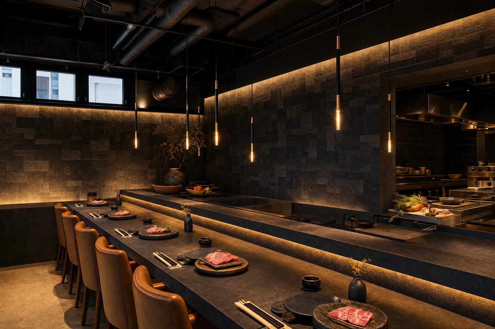
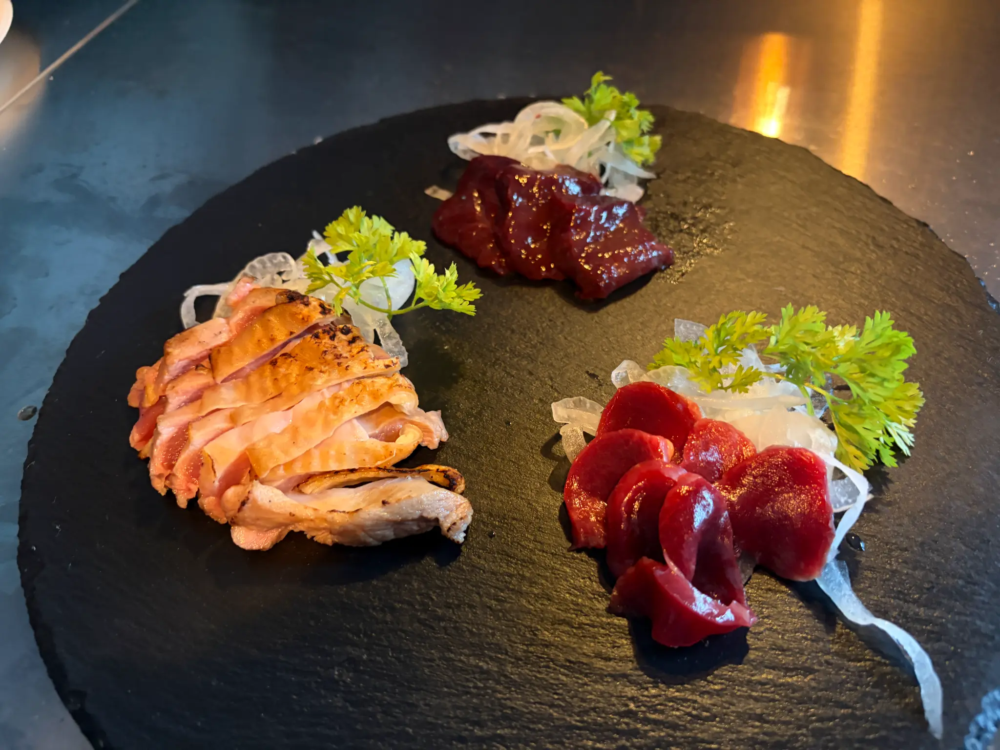

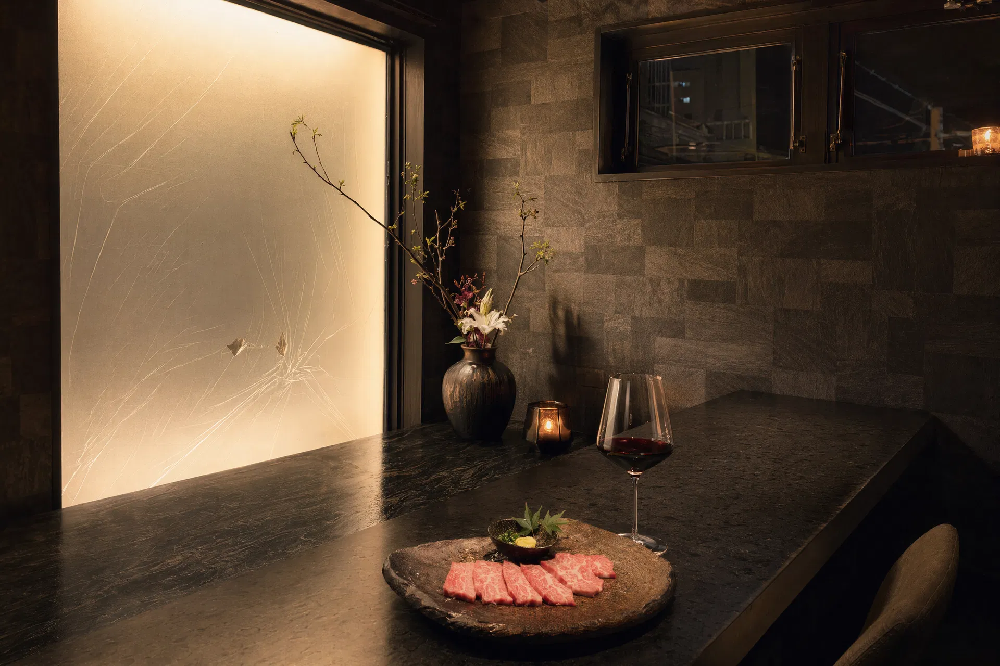
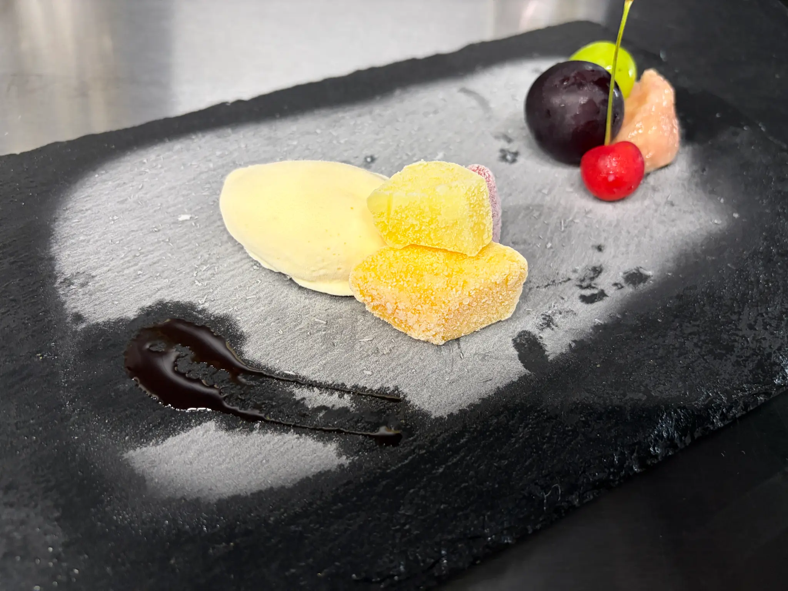
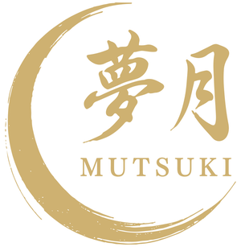
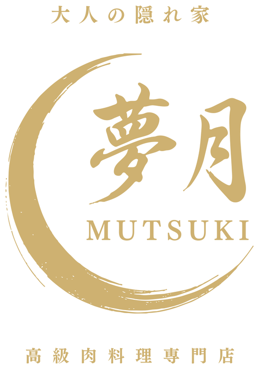
鐵板燒肉與和牛牛排 · 吧檯8席 · 宮古島平良
營業時間 17:00–24:00（最後入店 23:00）
備有中文菜單 · 20:00後可直接入店 · 歡迎單人用餐
NOW ON
無論何時，沒有訂位也可以直接入店。可以點一份牛排套餐，也可以只在吧檯點一盤肉配一杯酒。一個人用餐也很歡迎。
備有中文菜單，也可為您說明各個部位。現金、信用卡、PayPay 皆可使用。
OUR PROMISE
沖繩的本部牛與宮古牛，熊本的阿蘇赤牛。我們從產地、品種到部位逐一挑選，只端出自己也認可的肉。
鐵板燒肉，由我們在您面前以鐵板與石板煎製。沒有油煙，也不必拿夾子，只要告訴我們您喜歡的熟度。
吧檯8席與兩間4人包廂。無論一個人，或是與重要的人同行，都能安靜地度過。
最輕鬆的選擇
沙拉 · 鐵板和牛牛排 · 米飯糰 · 湯品。
鹽以新月之形鋪於石皿，一同奉上。
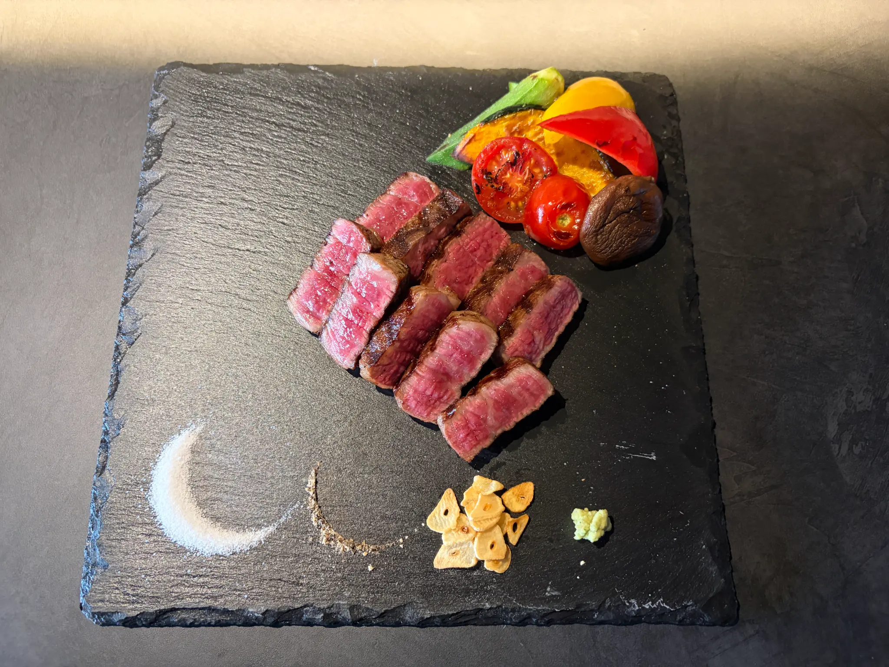
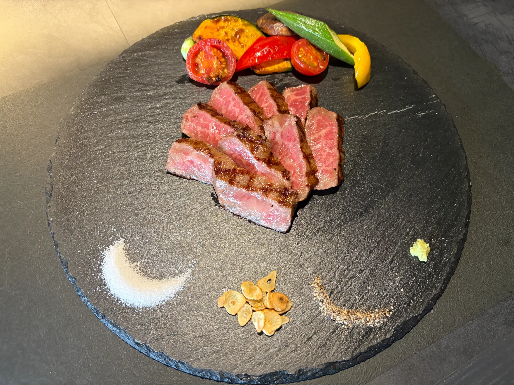
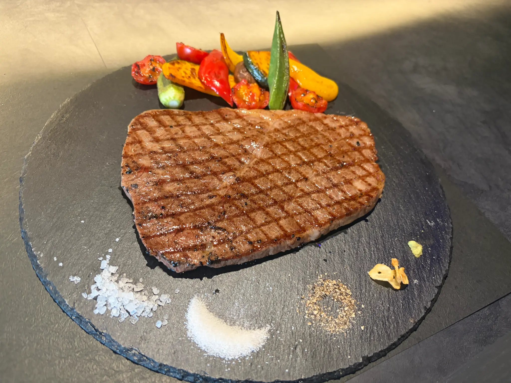
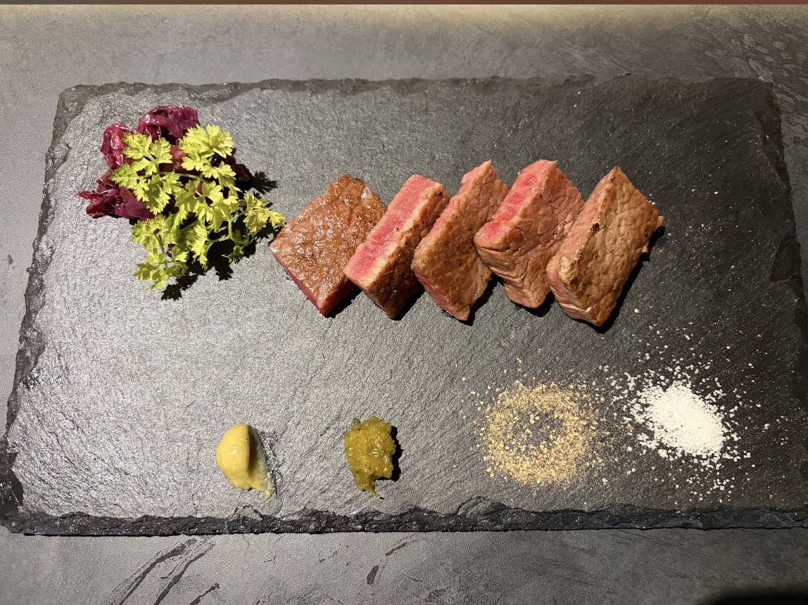
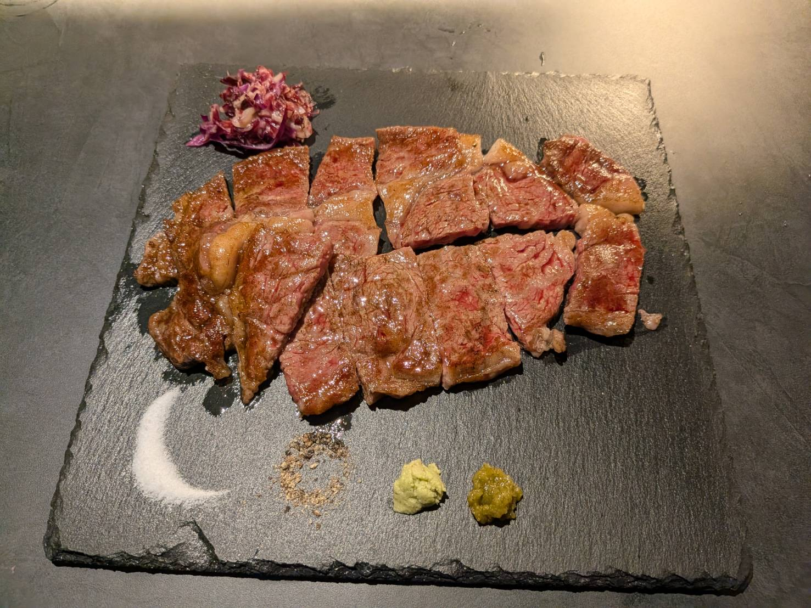
只想吃肉的話，也可以單點。
加 ¥1,650 即成套餐（附沙拉、米飯糰、湯品）
僅預約座位FULL COURSE
從前菜到甜點，以月亮的盈虧為名的四款套餐。
適合想要慢慢享用的夜晚，建議事先訂位。
OUR MEAT
品種、部位、等級。每一項都仔細確認過，才會送上鐵板。
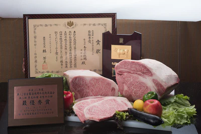
沖繩的黑毛和牛，與神戶牛、松阪牛同一品種，在這片島嶼上養育而成。
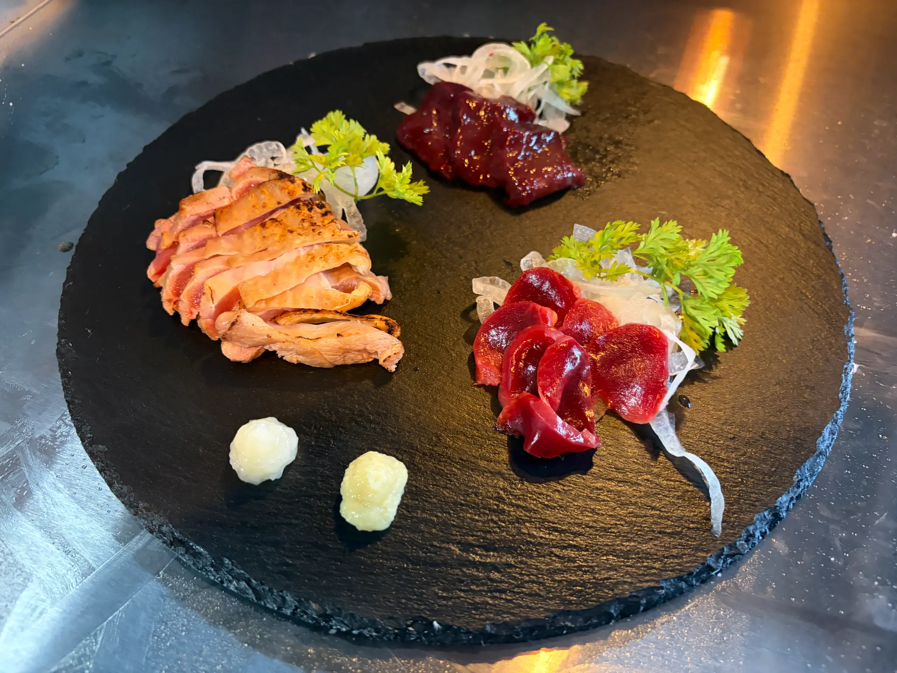
在這座島上養大的黑毛和牛。產量極少，幾乎不會流出島外。
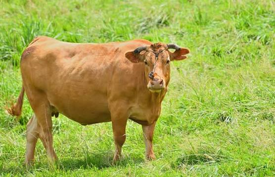
在開闊草原上放牧的褐毛和種。油花比一般和牛少，牛肉本身的味道更為濃厚。
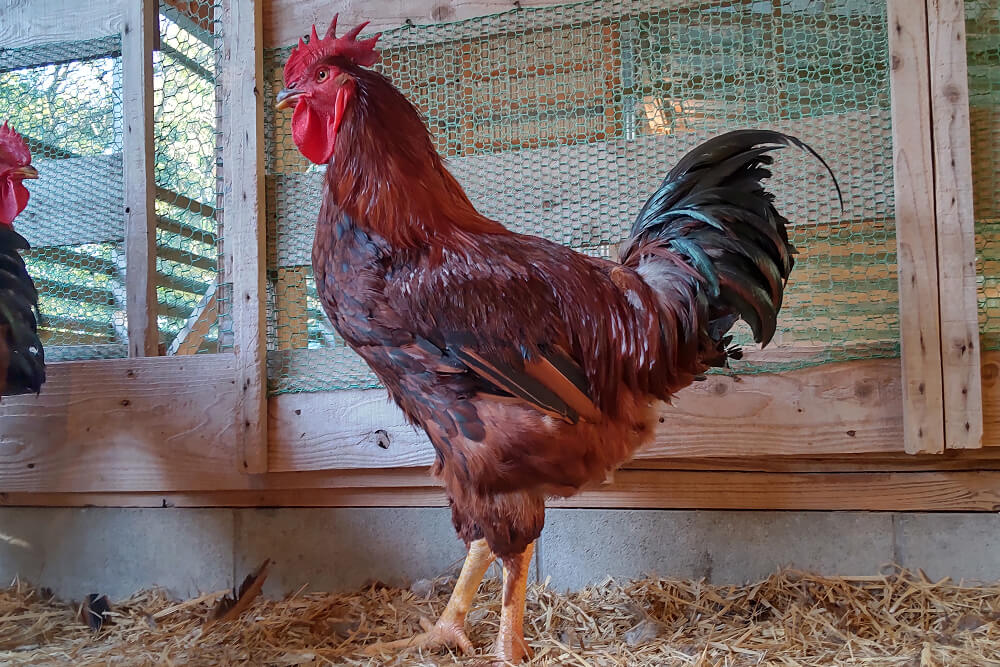
曾一度絕種、由當地農家復育成功的夢幻地雞。肉質結實，越嚼越香。
GALLERY




INFORMATION